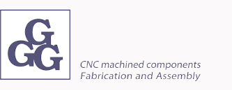

GGG - Firma specjalizująca w produkcji krótkich i średnich serii precyzyjnych i ultraprecyzyjnych komponentów. Posiada bogate doświadczenie w obróbce szerokiego zakresu materiałów, w tym: stali nierdzewnej, stali stopowej, aluminium i innych metali kolorowych oraz tworzyw sztucznych. Oferuje wparcie inżynierskie, techniczne i produkcyjne w procesie rozwoju nowych produktów.